23% de mulheres nas turmas de Engenharia de Software do IFPE Belo Jardim.
Fonte: levantamento interno do campus, 2026.1.
SeguirGarotas na Engenharia de Software
GirliES é o projeto de extensão do IFPE Belo Jardim: curso e rede de apoio de aluna para aluna.
23% de mulheres nas turmas de Engenharia de Software do IFPE Belo Jardim.
Fonte: levantamento interno do campus, 2026.1.
74% dos ingressantes nos cursos de ciência, tecnologia, engenharia e matemática são homens. Elas são 26%. Fonte: plataforma Nexus, ingressantes nos cursos da área STEM.
56% x 29% é o ritmo de crescimento do ingresso nesses cursos entre 2013 e 2023: 56% para eles, 29% para elas. Fonte: plataforma Nexus, 2013 a 2023.
Assimetria técnica+Isolamento=Síndrome da impostora e evasão
A baixa presença de mulheres na Engenharia de Software não é falta de talento ou de capacidade. É falta de oportunidade prévia e de senso de pertencimento.
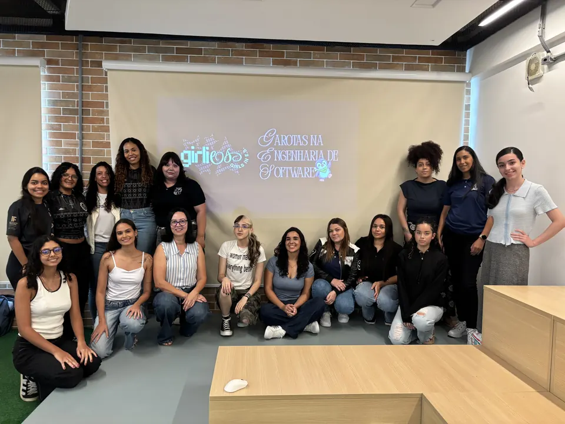
O GirliES nasceu de veteranas de Engenharia de Software que viveram o início do curso como minoria na sala e decidiram abrir caminho para quem vem depois.
Elas planejam as aulas, dão o curso e cuidam da rede de apoio para quem está chegando.
Nos Encontros de Acolhimento, as próprias fundadoras apresentam os dados, a proposta e a identidade do GirliES para as novas alunas.
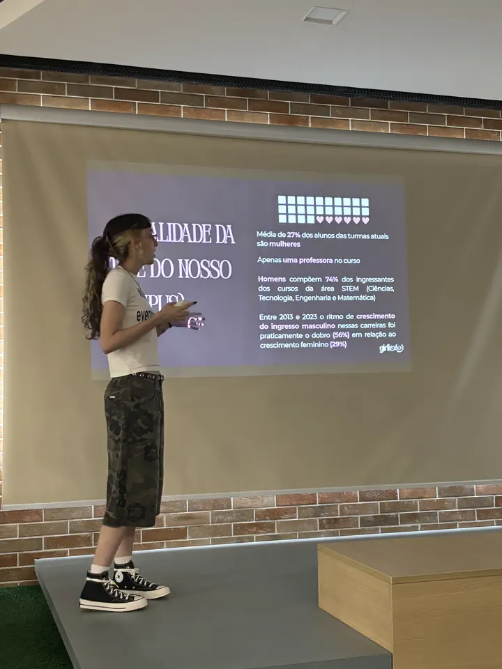
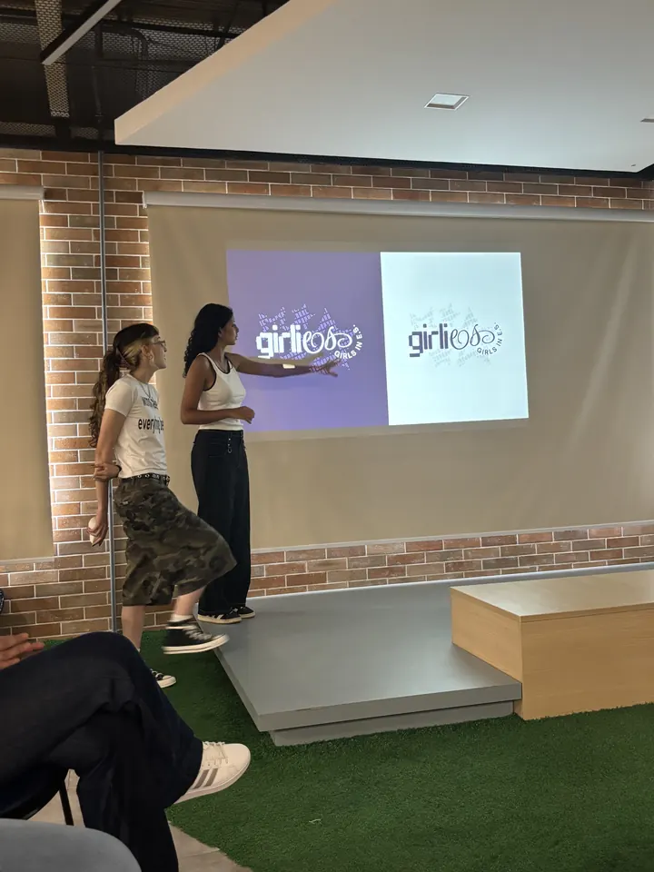
Os mascotes do GirliES carregam a engenharia de software em cada detalhe.
A garota que chega à engenharia de software com o código no peito.
O pinguim que acompanha a Ada em cada aula.
Por que um pinguim? Por causa do Linux, o sistema operacional livre que tem um pinguim como símbolo.
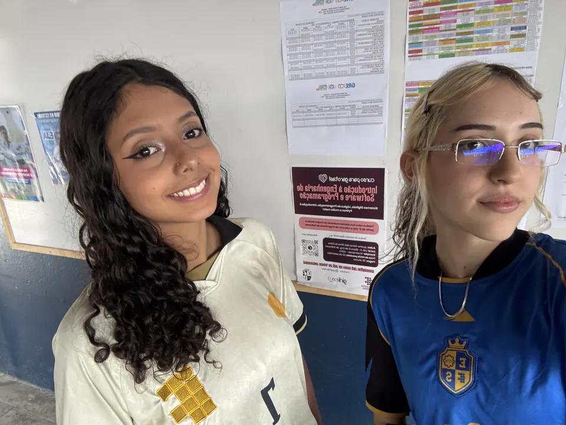
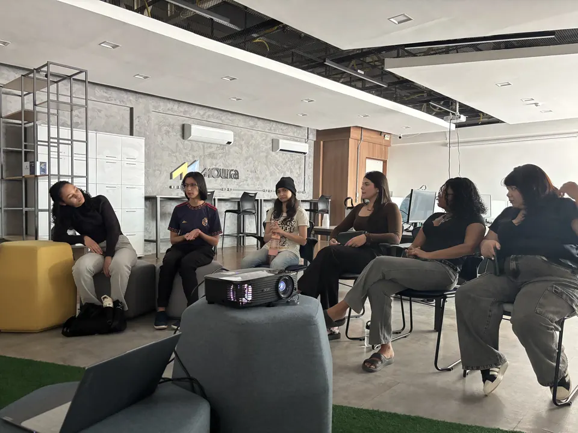
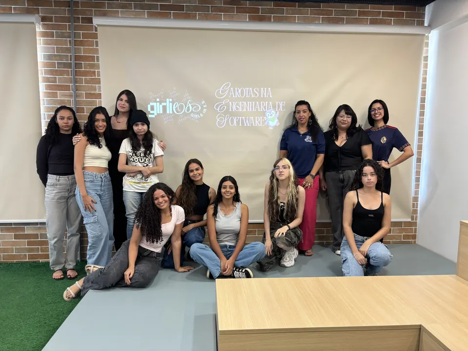
Curso de nivelamento
Presencial no Lab 4 do Bloco D de Engenharia de Software, no IFPE Belo Jardim, com ônibus do campus disponível. Para alunas do ensino médio a partir do 2º ano e para qualquer mulher que queira experimentar ou tenha curiosidade pela área, incluindo as calouras de Engenharia de Software.
Aula 1
Engenharia de Software
O que faz uma engenheira de software. Cascata e ágil. Scrum e Kanban com post-its.
Aula 2
Discreta e Sistemas
Sistema binário, portas lógicas AND, OR e NOT, e tabelas verdade.
Aula 3
Lógica de Programação
Programação em blocos, algoritmos e eventos. Uma animação ou mini-jogo.
Aula 4
Lógica de Programação
Do visual para o texto: variáveis, fluxogramas, entradas, saídas e pseudocódigo.
Aula 5
Introdução ao Python
Ambiente, sintaxe, tipos de dados, operadores, print() e input().
Aula 6
Introdução ao Python
if, elif e else, operadores lógicos e o início do projeto final.
Aula 7
Introdução ao Python
Como fazer o computador trabalhar por você sem copiar e colar código mil vezes.
Aula 8
Introdução ao Python
Bibliotecas e a Turtle, a tartaruguinha que desenha guiada por código.
Aula 9
Algoritmos e Estruturas
Listas e tuplas: índices, fatiamento, adicionar e remover itens.
Aula 10
Algoritmos e Estruturas
Como o código procura algo em uma lista usando for e if. Validações simples.
Aula 11
Algoritmos e Estruturas
Sem matéria nova: juntar tudo e finalizar o bichinho funcional na tela.
Aula 12
Algoritmos e Estruturas
Uso saudável de LLM na programação, melhoria da interface do jogo e apresentações.
Aula 13
Modelagem e Maker
Cultura maker, desenho vetorial e chaveiros em MDF ou acrílico na cortadora a laser do campus.
Aula 14
Modelagem e Maker
Modelagem 3D no Tinkercad, fatiamento, impressora 3D e entrega dos certificados.
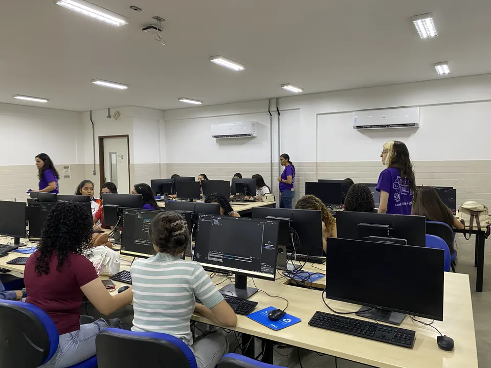
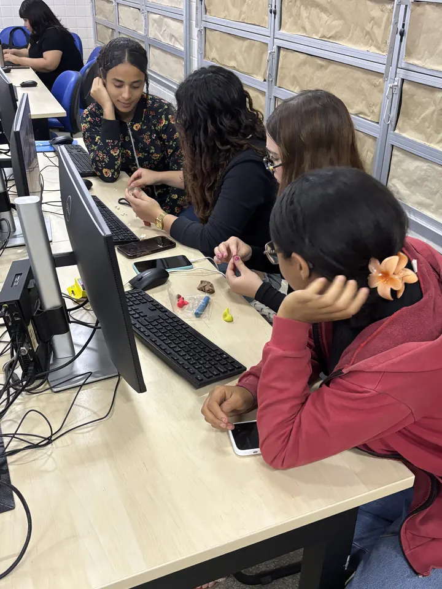
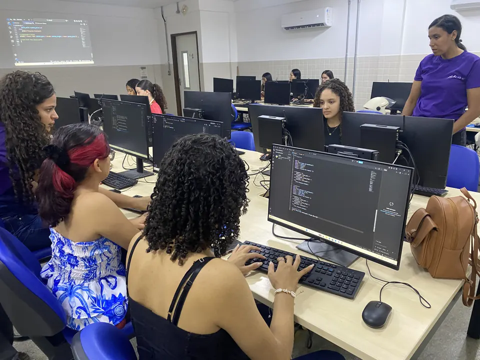
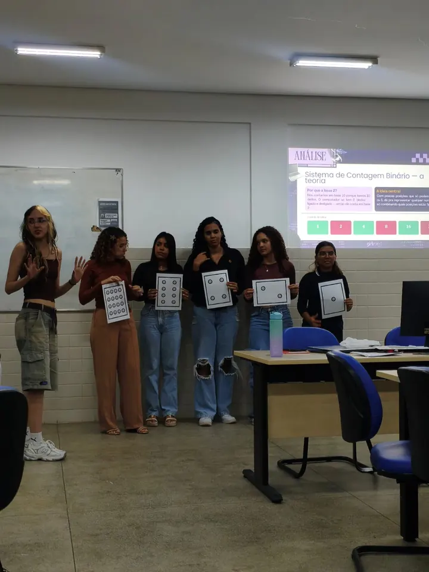
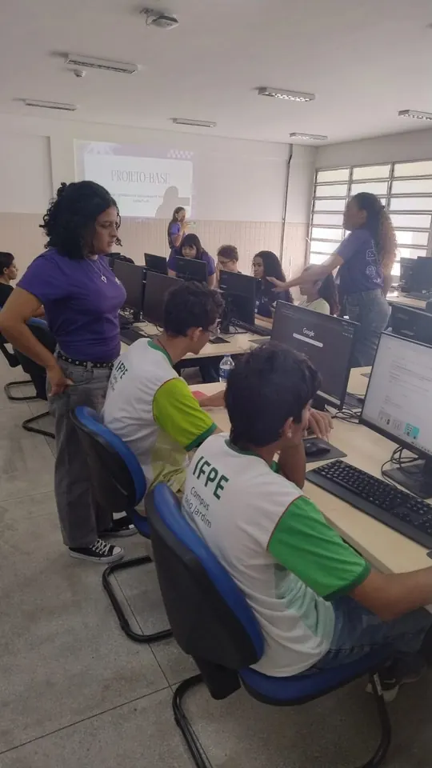
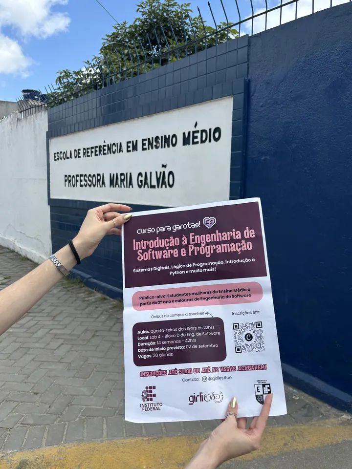
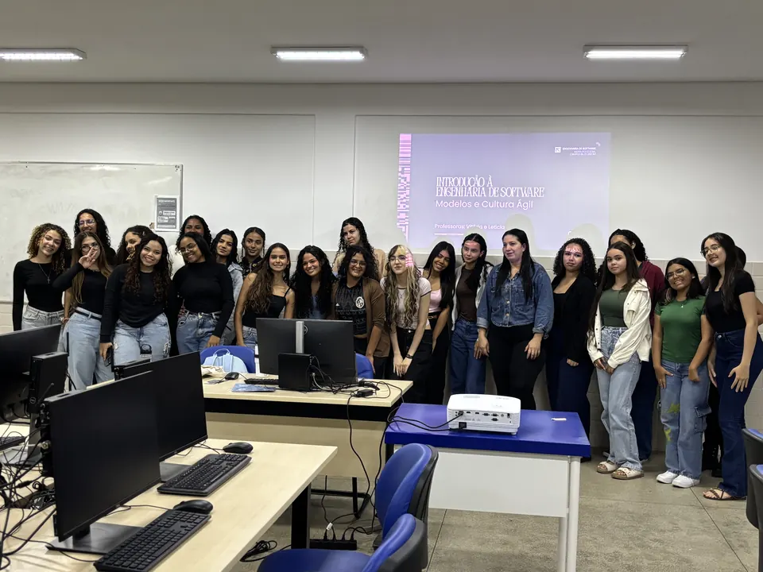
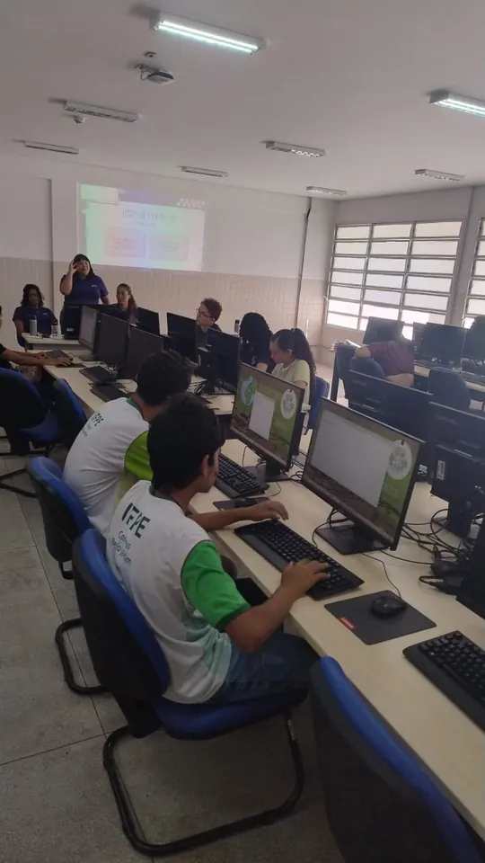
Estas são as metas do projeto para os próximos semestres.
50meta de alunas capacitadas por ano no curso de nivelamento
60%meta mínima de vagas para garotas sem contato prévio com programação
40%das vagas reservadas a mulheres negras
80%meta de alunas ativas nos primeiros períodos
4escolas visitadas por semestre na busca ativa, no mínimo
Entre mais de 480 propostas selecionadas na categoria no Edital SETEC/MEC 2026, de projetos de extensão em acesso, permanência e êxito da Rede Federal.
Com o apoio do NEGED e do NEABI.
Vem com a gente
Siga o projeto para saber das próximas turmas. Estuda em outra universidade e quer levar o GirliES para lá? Escreva para a gente.